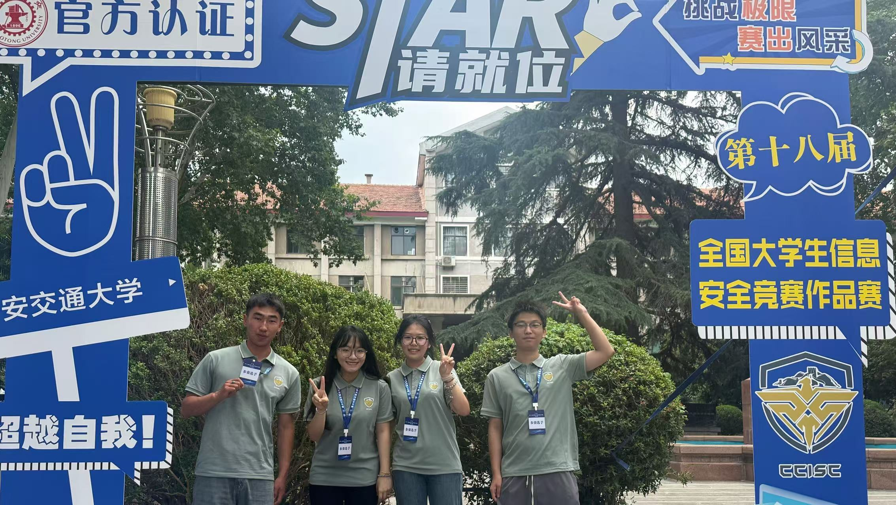
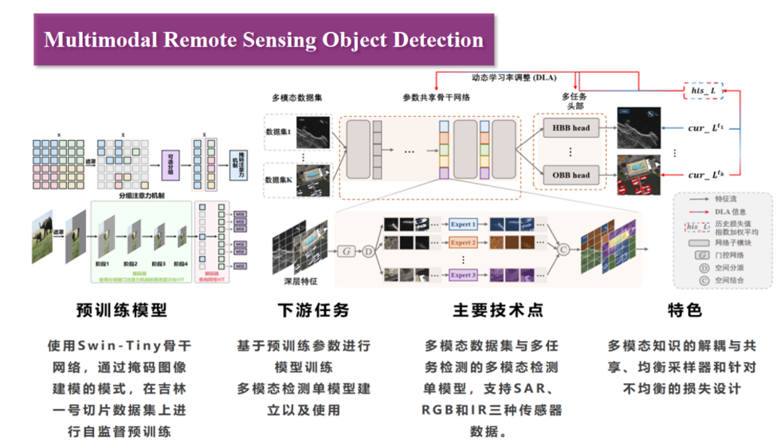
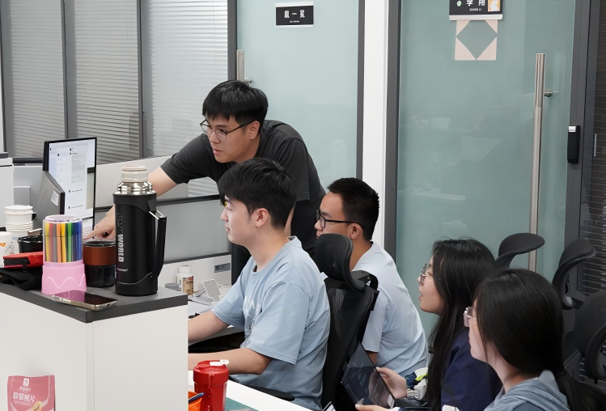

About Me
I am an undergraduate student majoring in Information Security at Nankai University (expected graduation: June 2026). My academic journey is driven by a passion for Artificial Intelligence, particularly in Computer Vision, Natural Language Processing, and Agents.
Education
Nankai University
09/2022 - 06/2026Major: Information Security (undergraduate)
- Awards: Nankai University Academic Excellence Scholarship (2025), Outstanding Key Member of the University Communist Youth League Committee (2022)
Research Interests
Artificial Intelligence
Computer Vision, Natural Language Processing & Agents
Interdisciplinary Areas
Computer Graphics, Visualization
Experience
Competition Experience
2025 National College Student Information Security Competition
03/2025 - 07/2025Core Team Member
- Conducted security risk assessment for LLMs services, performing deployment research, security testing, and data analysis.
- Investigated localized deployment of 36 model services (Ollama, OpenLLM, AnyLLM), executed 16 unauthenticated vulnerability attacks with comprehensive effect analysis.
- Built a web testing platform using Django, implementing UI design and functional interaction with Python, JSON, and CSS.
- Established automated backend data processing pipelines for scraping, cleaning, and report generation, maintaining data via Navicat-MySQL.
- Achievement: National First Prize, eassy: A First Look at Large Language Model Applications in the Wild from Dual Perspectives-ACM IMC 2025 poster

2nd "Jilin-1" Cup Satellite Remote Sensing Application Youth Innovation and Entrepreneurship Competition
09/2024 - 01/2025Team Leader
- Directed a unified model for multi-modal remote sensing object detection project (SM3Det framework).
- Employed Swin-Tiny backbone network and self-supervised pretraining via masked image modeling.
- Constructed a multimodal remote sensing benchmark dataset (SARDet-100K, DOTA, DroneVehicle, Changguang Satellite images).
- Deployed Python core code on lab servers, merging detection module with multimodal task structures.
- Achievements: 19.0% and 15.3% mAP gains on 1.4K and 2.8K image slices respectively. Won third prize in Competition Topic D.

2024 "Higher Education Press Cup" National College Student Mathematical Modeling Contest
05/2024 - 10/2024- Solved Problem B "Multi-stage Production Optimization" using Python-based data processing and algorithm design.
- Developed data cleaning, analysis pipelines, and Monte Carlo simulations.
- Visualized results via Matlab and created system architecture flowcharts using Visio and ProcessOn.
- Completed a 24-page modeling paper.
Academic Experience
Nankai University ReductLab
06/2024 - PresentResearch Intern
- Conducted research on multimodal remote sensing object detection, optimizing SM3Det with MOE modules and DLA structures.
- Authored an independent Zhihu column "SM3Det: All-in-One Multimodal Remote Sensing Object Detection!".
- Contributed to the lab's AI Agent productization project, advancing "Reduct" app development.
- Serving as project lead for the "Internet + Reduct" initiative.

Cryptographic Application Transformation Technology Based on Ciphertext Query Algorithms
06/2022 - 04/2025- Built an encrypted database transformation project using plaintext encryption technology.
- Built system modules with PHP and ODBC interfaces for "zero-code modification" transformation.
- Produced one research paper and a comprehensive project report.